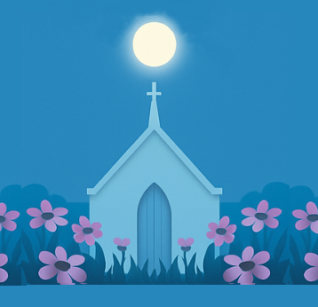

A traditional country & western song

A slow, melancholy ballad
A nostalgic tune full of memories
A heartfelt storytelling ballad
This song began as a request from one of my karaoke singers who loved the music of Patsy Cline, Dolly Parton, Tammy Wynette, Connie Smith, and Debby Boone. She asked me to bring her favorites together, not as a playlist, but as one piece she could perform as if it were her own. I took the lyrics she loved, analyzed their themes, and combined them with my own original lines and transitions to create a single, continuous narrative. Instead of sounding like fragments stitched side by side, the result flows through a full emotional arc of promise, turmoil, reconciliation, and hope. The listener doesn’t need to know the source songs at all — it plays like a cohesive, original composition that stands on its own.
Below you’ll find four buttons, each one linked to a different version of this same song. The lyrics never change, but the delivery does — and that’s the whole point. One version is arranged in a traditional country-western style, another is shaped into a heartfelt country ballad, the third leans into a nostalgic country-western feel, and the fourth carries a more melancholy tone. By clicking through and listening to each, you’ll hear how the exact same words can take on entirely different emotions depending on the genre and arrangement. This shows you the power of what I do: I don’t just write or arrange songs, I help shape them to match your story, in your tone, and in your voice. When you hear the differences between these four versions, you’ll understand how flexible and personal this process really is. So go ahead — click on the buttons below, listen to the different versions, and imagine how your own story could be told in the style that fits you best. When you’re ready, place your order and let me create a one-of-a-kind song that is truly yours.